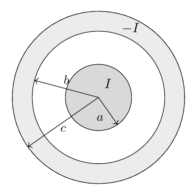
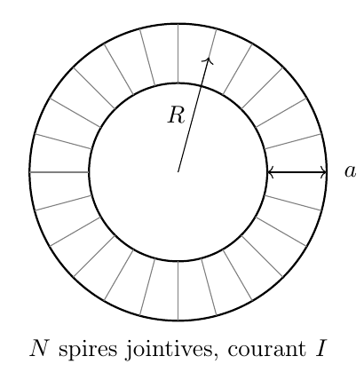
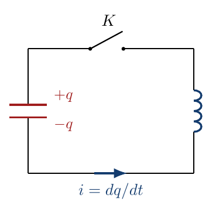

TD 3 — Magnétostatique : théorème d'Ampère
Fil, cylindre plein, coaxial, tore, solénoïde : à chaque fois les 5 étapes d'Ampère avec les règles de symétrie inversées de $\vec B$. Puis le circuit LC, pont vers l'onde du Ch. 5.
La feuille annonce « exercices corrigés » mais ne contient que les énoncés : correction rédigée à partir du cours (Ch. 3, Ch. 4, Ch. 5).
- Symétries (plan de symétrie des courants ⇒ $\vec B$ ⟂) et invariances.
- Contour = ligne de champ.
- $\oint\vec B\cdot\mathrm d\vec\ell=B\mathcal L$.
- $i_{enlacé}$ (avec signes).
- Égaler.
Exercice 1 — Fil rectiligne infini
15 minSymétries
Invariances par translation selon $Oz$ et rotation autour de $Oz$ ⇒ $B(r)$. Le plan (M, fil) est plan de symétrie des courants ⇒ $\vec B$ lui est ⟂ ⇒ $\vec B=B(r)\vec u_\theta$.
Ampère
Cercle de rayon r d'axe $Oz$, orienté selon $\vec u_\theta$ (I compté + vers $+\vec u_z$) : $B\cdot2\pi r=\mu_0I$ ⇒ $\boxed{\vec B=\dfrac{\mu_0I}{2\pi r}\vec u_\theta}$.
Exercice 2 — Cylindre plein, puis câble coaxial
25 min
1. r < a
$j=\frac{I}{\pi a^2}$ ⇒ $i_{enl}=j\pi r^2=I\frac{r^2}{a^2}$ ⇒ $B\cdot2\pi r=\mu_0I\frac{r^2}{a^2}$ ⇒ $\boxed{B=\dfrac{\mu_0Ir}{2\pi a^2}}$ (linéaire, nul sur l'axe).
1. r > a
$i_{enl}=I$ ⇒ $\boxed{B=\dfrac{\mu_0I}{2\pi r}}$ (comme un fil). Continu en $r=a$ ✓.
2. r < b
La gaine n'est pas enlacée : mêmes résultats qu'en 1 ($\frac{\mu_0Ir}{2\pi a^2}$ si $r\lt a$, $\frac{\mu_0I}{2\pi r}$ si $a\lt r\lt b$).
2. r > c
$i_{enl}=I-I=0$ ⇒ $\boxed{B=0}$ : le champ est confiné dans le câble (blindage, cf. fil rouge 2a).
Bonus : b < r < c
$i_{enl}=I-I\frac{r^2-b^2}{c^2-b^2}$ ⇒ $B=\dfrac{\mu_0I}{2\pi r}\cdot\dfrac{c^2-r^2}{c^2-b^2}$ (décroît jusqu'à 0 en c).
Exercice 3 — Solénoïde torique
25 min
Symétries
Invariance par rotation autour de l'axe du tore ⇒ pas de dépendance en θ. Tout plan contenant l'axe est plan de symétrie des courants (les spires sont dans ces plans) ⇒ $\vec B$ ⟂ ⇒ orthoradial : $\vec B=B(r,z)\vec u_\theta$.
Ampère sur un cercle de rayon r d'axe Oz
À l'intérieur du tore ($R-\frac a2\lt r\lt R+\frac a2$) : le cercle est traversé par les N spires ⇒ $B\cdot2\pi r=\mu_0NI$ ⇒ $\boxed{\vec B=\dfrac{\mu_0NI}{2\pi r}\vec u_\theta}$.
À l'extérieur (r plus petit ou plus grand, ou hors de la section) : $i_{enl}=0$ (ou $NI-NI$) ⇒ $B=0$. Le champ est entièrement confiné dans le tore.
2. Flux à travers une spire (section carrée)
B dépend de r ⇒ bandes $\mathrm dS=a\,\mathrm dr$ : $$\varphi_B=\int_{R-a/2}^{R+a/2}\frac{\mu_0NI}{2\pi r}a\,\mathrm dr=\boxed{\frac{\mu_0NIa}{2\pi}\ln\frac{2R+a}{2R-a}}$$ Si $a\ll R$ : $\varphi_B\approx\frac{\mu_0NI}{2\pi R}a^2$ (B ≈ uniforme × aire).
Exercice 4 — Solénoïde infini
20 minSymétries
Tout plan ⟂ à l'axe est plan de symétrie des courants ⇒ $\vec B$ axial ; invariances ⇒ $\vec B=B(r)\vec u_z$.
1. Extérieur
Rectangle entièrement extérieur : n'enlace aucun courant ⇒ $B(r_1)=B(r_2)$ : B uniforme dehors ; il doit s'annuler à l'infini ⇒ $\boxed{B_{ext}=0}$.
2. Intérieur
Rectangle à cheval (longueur L) : $B_{int}L=\mu_0nLI$ ⇒ $\boxed{\vec B=\mu_0nI\,\vec u_z}$, uniforme (le tore de l'ex. 3 avec $R\to\infty$ redonne ce résultat : $\frac{N}{2\pi R}=n$).
Exercice 5 — Le circuit LC : de l'oscillateur à l'onde
30 min
1. Équation
Maille : $u_C+u_L=0$ avec $u_C=\frac qC$, $u_L=L\frac{\mathrm di}{\mathrm dt}=L\ddot q$ ⇒ $\boxed{\ddot q+\omega_0^2q=0}$, $\omega_0=\frac1{\sqrt{LC}}$. Homogénéité : $[LC]=\mathrm T^2$ (voir Ch. 0) ⇒ ω₀ en s⁻¹ ✓.
2. Solutions
$q(0)=CU_0$, $i(0)=0$ (continuité dans L) ⇒ $q=CU_0\cos\omega_0t$, $u_C=U_0\cos\omega_0t$, $i=-CU_0\omega_0\sin\omega_0t$.
3. Rôle de l'induction
Quand C est vide, l'énergie est toute dans la bobine ($\frac12Li^2$ maximale). La bobine s'oppose aux variations du courant (Lenz, $u_L=L\,\mathrm di/\mathrm dt$) : le courant ne peut pas chuter brutalement, il continue et recharge C à l'envers. L'induction joue le rôle de l'inertie (la masse d'un ressort).
4. Énergie
$W=\frac{q^2}{2C}+\frac12Li^2=\frac12CU_0^2(\cos^2+\sin^2)=\frac12CU_0^2$ = constante. Chaque forme oscille en $\cos^2$ ou $\sin^2$, donc à la période $\frac{T_0}2=\frac\pi{\omega_0}$.
5. A.N.
$\omega_0=\frac1{\sqrt{10^{-2}\times10^{-7}}}=31\,623$ rad/s ⇒ $f_0\approx\boxed{5{,}03\ \mathrm{kHz}}$ ; $I_{max}=CU_0\omega_0\approx\boxed{15{,}8\ \mathrm{mA}}$ ; $W=\frac12CU_0^2=\boxed{1{,}25\ \mu\mathrm J}$.
6. Ouverture : la ligne
Coaxial : $L'=\frac{\mu_0}{2\pi}\ln\frac ba$, $C'=\frac{2\pi\varepsilon_0\varepsilon_r}{\ln(b/a)}$ ⇒ $L'C'=\mu_0\varepsilon_0\varepsilon_r$ : les ln (la géométrie) disparaissent ! $v=\frac1{\sqrt{L'C'}}=\frac{c}{\sqrt{\varepsilon_r}}=\frac{3\cdot10^8}{1{,}5}=\boxed{2{,}0\cdot10^8\ \mathrm{m/s}}$.